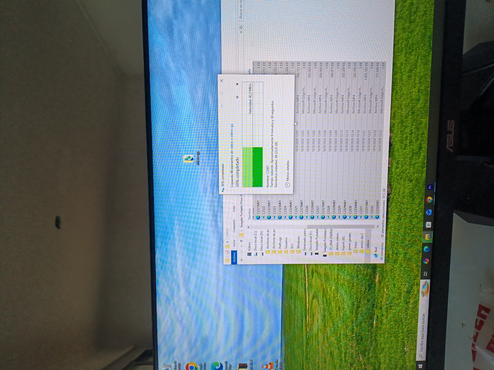
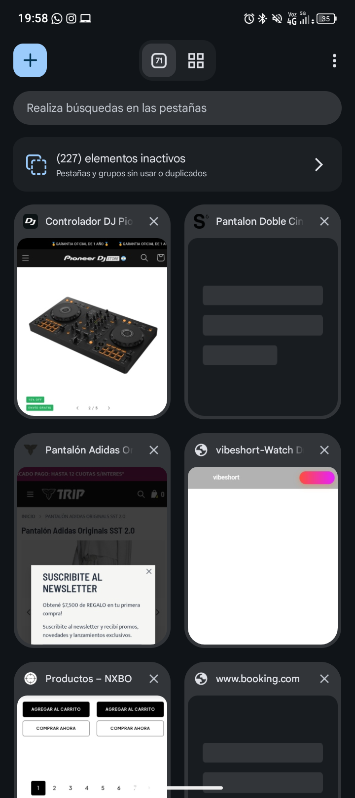

Micro-obsesiones
Mi mas grande obsesion son los datos. Datos curiosos que no aportan en nada y uno puede seguir con su vida sin ellos.
Cuando me entero de un dato nuevo necesito saberlo todo.
Fisica, filosofia, sociologia, historia, etc.
Hasta que un dia me di cuenta que todos tenian algo en comun.
Todos se basan en sistemas. Distintos tipos de sistemas pero todos describen como funciona cada organismo.
Tambien soy obsesiva con saber bien las definiciones y poder usar las palabras de manera correcta. De echo tuve que buscar la definicion de organismo.
Esto es lo que me dijo gemini:
"En un sentido general, un organismo es un sistema estructurado donde diferentes partes trabajan juntas para cumplir una función específica.Asi es como tambien tuve una epoca de investigacion de religiones, teneindo en cuenta esto de un todo. Y que todo esta en un otro, o que todo conocimiento se puede extrapolar a otro tipo de ciencia.
[esto es lo que mas me fasina saber, la etimologia] La palabra viene del griego organon, que significa "herramienta" u "instrumento".
Pensalo como un mecanismo: ninguna parte funciona sola, sino que todas se necesitan mutuamente para que el "todo" tenga vida o utilidad.
Tal vez por eso siempre tuve una inclinacion al comunismo(?), o tal vez por eso estudio informatica y vivo en una residencia asocioacion civil manejada por una comision directiva donde hoy en dia ocupo el rol de tesorera.
O tal vez por eso estudio multimedia, la forma de arte que considero yo mas cercana a la tecnologia que forma parte de mi vida desde mis primeros anios (tengo el teclado en ingles, me es mas facil programar).
Quiero poder plasmar esta unicidad que siento que existe en todo con la herramienta que me acompanio toda mi vida y recien hace poco me pregunte como sera que funciona ese organismo no vivo.
Voy a dejar aca solo porque puedo lo que me dijo la ia despues de que pregunte por la definicion de organismo:
"Dependiendo del contexto, el concepto se aplica de tres formas principales:
1. Organismos Sociales e Institucionales (El ámbito público y civil)
Son entidades, dependencias o instituciones creadas por las personas para organizar la sociedad, administrar recursos o prestar servicios.
2. Organismos en Diseño y Desarrollo Web
Existe una metodología de diseño llamada Diseño Atómico (Atomic Design).
En este contexto, un organismo es un componente de la interfaz gráfica complejo.
3. Organismos Vivos (Biología)
Como vimos antes, es cualquier ser vivo individual (desde una bacteria hasta una ballena) cuyas células y órganos trabajan coordinados para mantenerlo con vida.
YO: se podria decir que la compu es un orgnismo no vivo?
GEMINI: No exactamente, pero es una analogía excelente que muchos científicos y filósofos de la computación utilizan.
En la ciencia estricta, una computadora no es un organismo porque carece de las funciones biológicas vitales (no se reproduce por sí misma, no evoluciona orgánicamente ni está hecha de células).
Por eso, técnicamente se define como un sistema artificial o un mecanismo cibernético.Sin embargo, si aplicamos la definición general de "sistema estructurado donde las partes cooperan", la computadora se comporta de forma idéntica a un organismo vivo:
¿En qué se parecen una computadora y un organismo?
Tiene "Órganos" especializados: El procesador (CPU) actúa como el cerebro, la memoria RAM como la memoria a corto plazo, el disco duro como los recuerdos a largo plazo y la fuente de alimentación como el corazón que bombea energía.
Procesa estímulos (Irritabilidad): Reacciona a su entorno. Si movés el mouse (estímulo), el cursor se mueve en la pantalla (respuesta).Consume y transforma energía (Metabolismo): Toma energía eléctrica de la pared y la transforma en luz, sonido, procesos lógicos y calor.
Sufre "Enfermedades": Puede ser infectada por virus informáticos que alteran su funcionamiento o dañan sus "órganos".La gran diferencia actualLa diferencia clave es la autonomía y la reproducción. Un organismo vivo puede repararse a sí mismo, adaptarse evolutivamente a su entorno y generar copias de sí mismo sin ayuda externa.
La computadora todavía depende de los humanos para construirse, repararse y encenderse.

Desplegar ficha técnica y datos ocultos
CCRU: Writings 1997–2003 El manifiesto definitivo de la vanguardia filosófica que predijo nuestro presente hiperconectado.
¿Qué es la CCRU? La Unidad de Investigación de Cultura Cibernética fue un colectivo de filósofos y teóricos rebeldes fundado en la Universidad de Warwick en los años 90. Liderados espiritualmente por figuras como Mark Fisher y Nick Land, mezclaban filosofía de vanguardia, ciencia ficción, drogas y música electrónica.
El libro objeto: Esta antología reúne sus escritos clandestinos producidos entre 1997 y 2003. Funciona como una máquina del tiempo teórica que explora cómo la tecnología, el capitalismo digital y la inteligencia artificial escapan al control humano para rediseñar la realidad.
Dato curioso / Curiosidad extra: El colectivo operaba más como un culto ciberpunk que como un departamento universitario formal. De hecho, la universidad llegó a negar que la CCRU hubiera existido alguna vez en sus instalaciones debido a sus métodos de investigación tan extremos y poco ortodoxos.
Este tema me interesa muchísimo porque puedo pasar horas aprendiendo cosas nuevas y haciendo conecciones de lo que sea.
Colecciones intangibles
Cosas que acumulo para nunca volver a verlos.
- Marcadores en el navegador
- Posteos de instagram, tik tok y facebook
- Capturas de pantallas con cosas para buscar (libros, musica, informacion)
- Fotos y videos mios o de mis amigos
- Ideas para proyectos!

¿Querés conocer un dato curioso?
Me da mucha ansiedad el momento en que lo guardo porq ya se que no ko voy abrir jamas. Y me queda en mi lista imaginaria de pendientes pero yo solota me produzco eso. :D
Mi Top 3
De las peores perdidas que tuve con la tecnologia. (porque siempre tuve una relacion muy particular)
- Mi primer MP3
- Mi primera notebook
- Mi unica mac
Ver los motivos de mi ranking
- Porque todas andaban mejor cuando otra persona las usaba Y se sentia traicion.